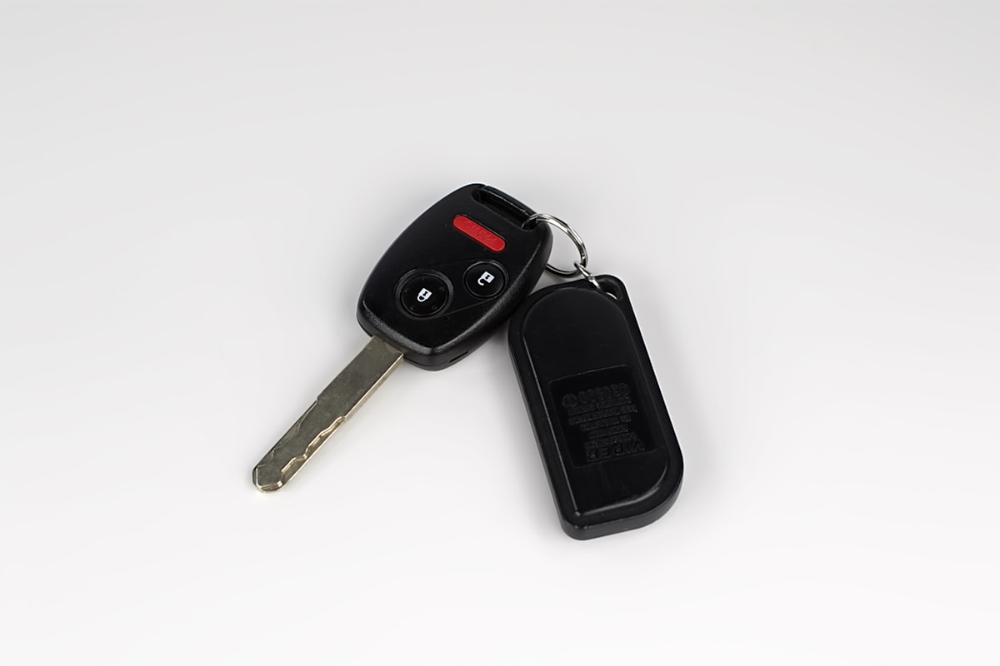

Зламався ключ у замку — що робити? Витягуємо без пошкоджень

Ключ обламався і уламок застряг у замку? Найважливіше — не намагайтесь витягти його підручними засобами. Пінцет, голка, магніт чи інший ключ у 80% випадків заштовхують уламок глибше і ламають секрети личинки. Тоді замість простого витягування за 500 грн доводиться розбирати або міняти весь замок — це вже 2 000–8 000 грн.
Уламок ключа в замку — не торкайтесь нічого
Зателефонуйте — підкажемо як зафіксувати ситуацію і виїдемо
Що зробити прямо зараз — 4 кроки
- Зафіксуйте положення замка. Не повертайте замок далі, не смикайте кермо, не пробуйте завести двигун. Уламок має лишитись у вихідному положенні — це полегшує витягування.
- НЕ використовуйте пінцет/голку/магніт. Це найпоширеніша помилка. Уламок ламкий і має шорстку поверхню зрізу — будь-яка спроба заштовхує його далі або обламує ще раз.
- Зателефонуйте до Seven Keys. +38 (099) 605-78-86. Опишіть ситуацію: де зламався (запалювання чи дверний замок), яка марка авто, чи лишилась голівка ключа на руках.
- Замовте дублікат одразу. Якщо ключ зламався — друга його половина слабка по всій довжині. Не варто склеювати чи виправляти — наступного разу зламається в найгірший момент.
Як ми витягуємо обламаний ключ
Основний інструмент — професійний екстрактор (key extractor): тонке стальне лезо з гачком на кінці, яке заходить уздовж паза личинки поряд з уламком, чіпляється за зріз і витягує уламок назовні. Робота займає 5–30 хвилин і не вимагає розбирання замка.
У складних випадках, коли уламок заштовхнули глибоко або секрети уже частково пошкоджені, використовуємо зйом личинки замка — знімаємо її з механізму, витягуємо уламок збоку і ставимо назад. Це теж не руйнівна процедура, але займає 30–60 хвилин і вимагає інструменту під конкретний тип замка.
Чому ключі ламаються — типові причини
- Зношений ключ. Старий ключ (5+ років активного використання) має мікротріщини, особливо біля корпусу. Найслабше місце — зразу за голівкою.
- Зношена личинка. Якщо для повороту ключа потрібно докласти силу — це означає, що секрети личинки зносилися. Силу прикладаєте до ключа, він і ламається.
- Дешевий неякісний дублікат. Болванка з м'якого металу ламається в 5–10 разів швидше за оригінал. Економія 100 грн при виготовленні дублікату — це 2000+ грн на ремонт замка пізніше.
- Спроба повернути ключ при заклиненому замку. Замок не повертається з різних причин (мороз, бруд, зношення) — а водій вирішує «трохи сильніше». Результат: уламок у замку.
Де найчастіше ламається ключ
- Замок запалювання (~60% випадків) — найбільший опір при повороті, особливо вранці на холоді. Старі VW, Audi, Mercedes — у групі ризику.
- Дверний замок водія (~25%) — особливо взимку, коли замок прихоплює льодом і його намагаються «провернути».
- Замок багажника (~10%) — зазвичай рідко використовується, корозія заклинює.
- Бардачок або інші внутрішні замки (~5%) — дрібні замки з тонкими ключами.
Чого НЕ робити
- Не пхайте пінцет, голку, магніт. Магніт не працює — ключі з кольорового сплаву немагнітні. Пінцет/голка тільки шкодять.
- Не лийте WD-40 / олію. Це не допоможе витягти уламок, а потім ускладнить ремонт (брудна личинка).
- Не намагайтесь «звести» уламок іншим ключем. Це майже гарантовано ламає секрети — і ремонт замка обов'язковий.
- Не їдьте, якщо вдалось завестись. Якщо уламок пройшов далі і авто завелось — не глушіть, не їдьте додому. У замку залишилась проблема, наступного разу авто може не завестись узагалі.
Часті запитання
Чи зламається замок при витягуванні?
Ні. Професійний екстрактор не пошкоджує ні секрети, ні корпус личинки. Після витягування замок працює штатно — дублікат ключа відкриватиме і запускатиме авто без проблем.
А якщо вже хтось «копався» в замку до вас?
Найгірший сценарій. Уламок заштовханий глибше, секрети погнуті, паз забитий. Доведеться знімати личинку і ремонтувати або міняти. Тому головне правило — не чіпайте уламок до приїзду майстра.
Чи потрібно міняти личинку замка після витягування?
У 80% випадків — ні. Якщо уламок витягнули акуратно — личинка справна, потрібен лише новий ключ. Заміна личинки — тільки якщо секрети пошкоджені або сам замок зношений.
Чи робите дублікат після витягування одразу?
Так. Якщо є голівка зламаного ключа — ми за нею робимо новий повноцінний ключ (з чіпом, якщо потрібно). Якщо голівки немає — виготовляємо ключ за личинкою. Все за один візит.
Не чіпайте уламок — кожна спроба коштує грошей
Зателефонуйте — підкажемо як зафіксувати ситуацію до приїзду майстра